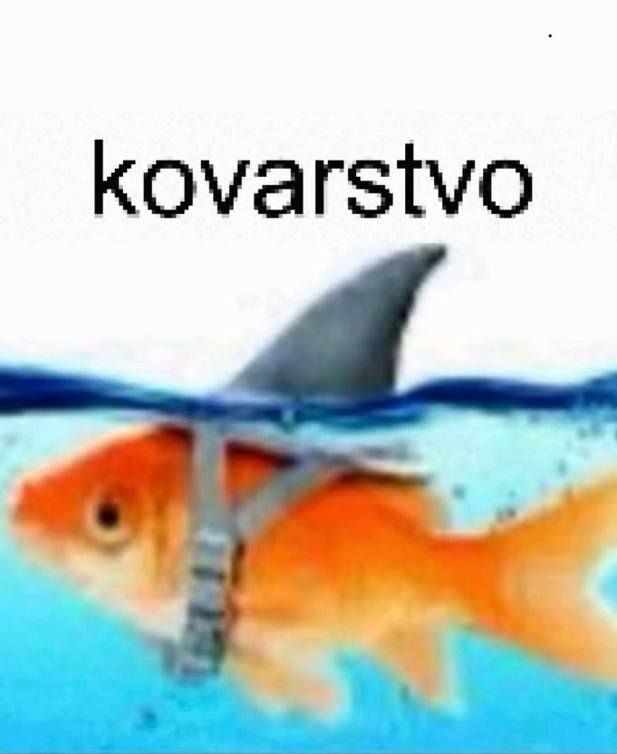

Место учебы
Фундаментальная и прикладная лингвистика, НИУ ВШЭ, Москва
Человек, не умеющий создавать HTML

Фундаментальная и прикладная лингвистика, НИУ ВШЭ, Москва
Школа №1
- Попала в лингвистику случайно после того, как рандомно вышла на регион ВсОШа, а сейчас благодаря нему я здесь
- Около пяти лет занимала плаванием
- moi terve moi
- Большую часть жизни рисую, пытаясь запечатлеть мимолётные чувства
- Люблю слушать рандомную музыку, чтобы поймать такой же мимолётный вайб (советовала бы послушать это и это)!
кстати, я всегда буду рада познакомиться с новыми людьми и обсудить всякое, так что можете писать в тг!!